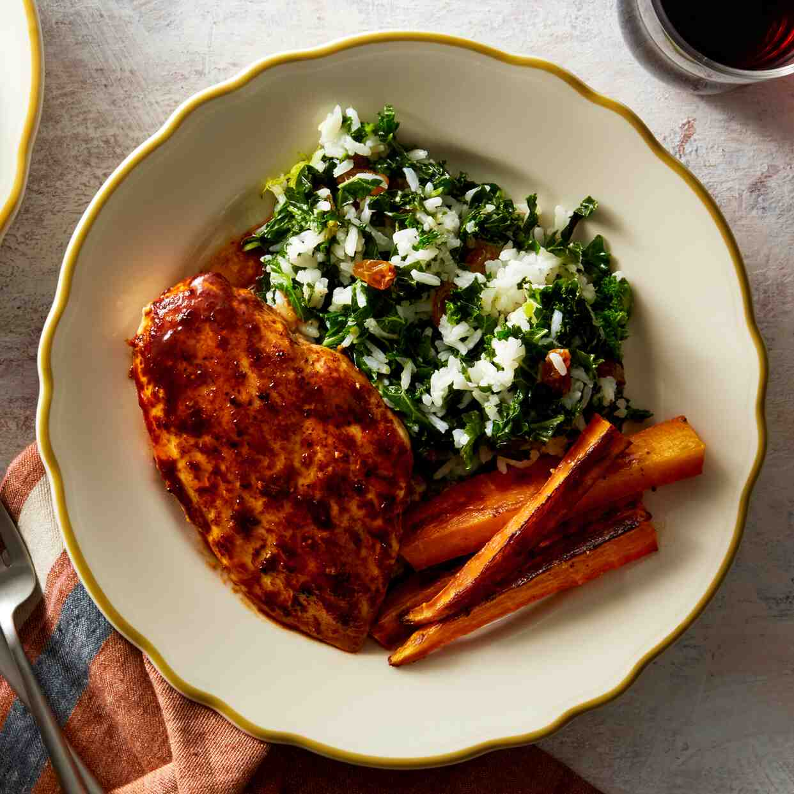

Ancho-Orange Chicken
A delicious and spicy Ancho-Orange chicken served with kale rice and roasted carrots. Perfect for a flavorful weeknight dinner that's packed with taste.

Beef Medallions
Tender beef medallions with a rich mushroom sauce, served over creamy mashed potatoes. A classic comfort food elevated for a special occasion.

Broccoli Pesto Sandwiches
A fresh take on a classic pesto sandwich, featuring vibrant broccoli and basil pesto. Served with a light romaine and citrus salad.